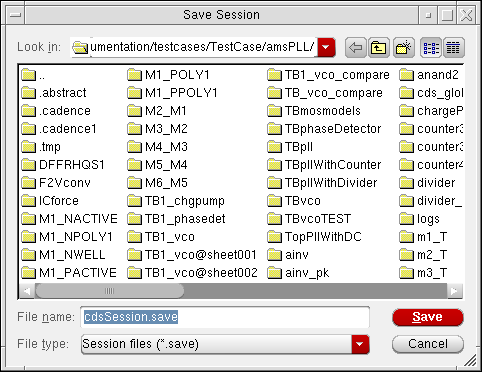
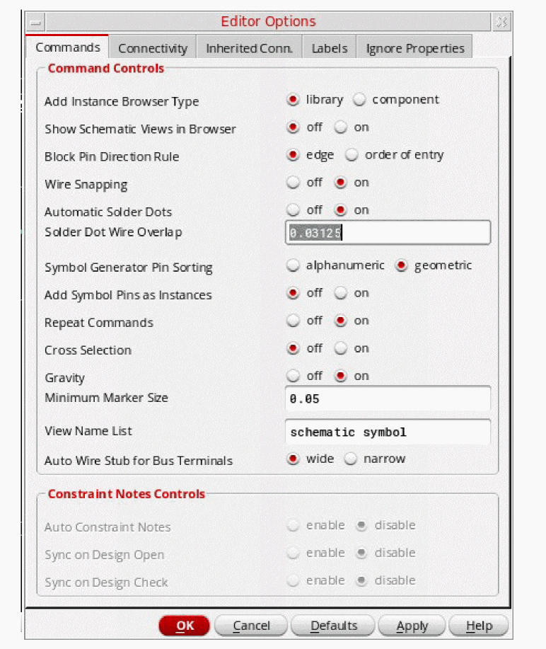
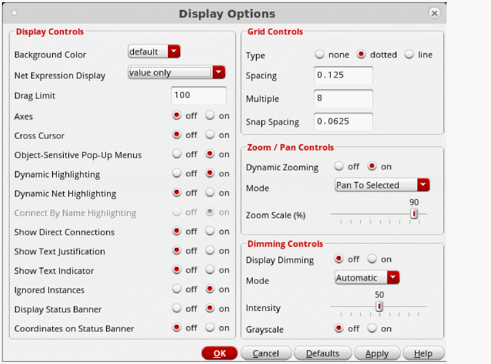
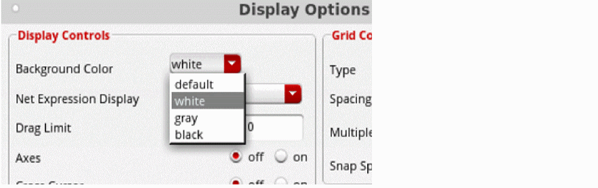
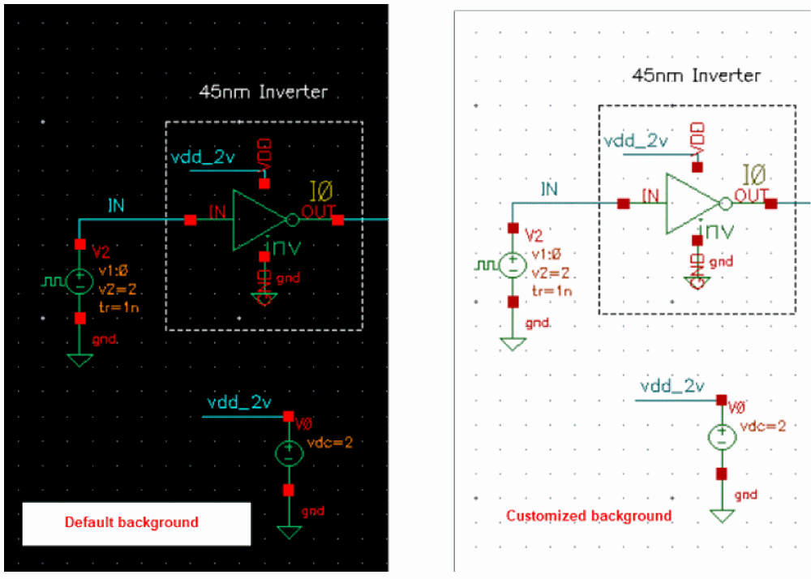
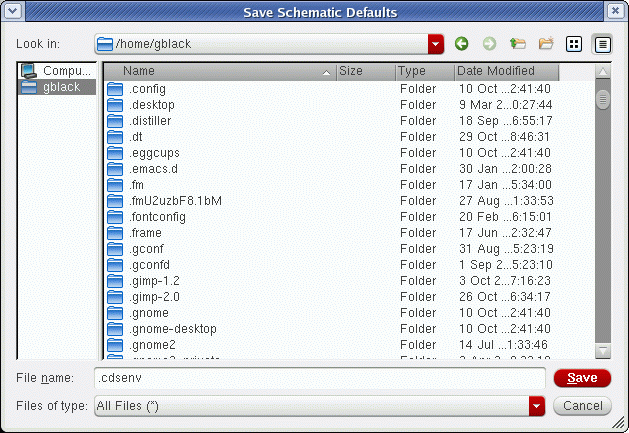
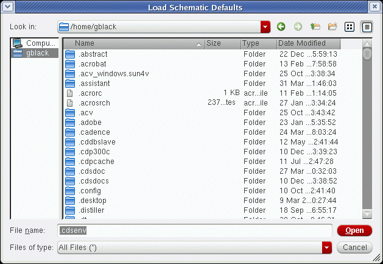

12
Setting Virtuoso Schematic Editor Options
You can change the appearance and the behavior of the Virtuoso® Schematic Editor by using the Options menu in the schematic window, symbol window, or Command Interpreter Window (CIW). In general, you can choose a preference once you are in a session. When you find a desired behavior, you can make it the default for the product for that session.
This chapter provides information about the following:
- Overview of Virtuoso Schematic Editor Options
- Changing User Preferences
- Saving the Current Window Setup
- Viewing Bindkey Settings
- Changing Browser and CIW Preferences
- Customizing Editor Options
- Changing Display Options
- Selecting Objects Using the Filter Option
- Setting Plot Options
- Setting Schematic Check Options and Rules
- Setting the Tool Filter
- Saving Form Field Default Settings
- Loading Form Field Default Settings
Overview of Virtuoso Schematic Editor Options
The following options are available from the CIW:
| Command (CIW) | Description |
|---|---|
The following options are available from the schematic window:
Changing User Preferences
You can change window and command preferences from the CIW by using Options – User Preferences, described in Virtuoso Design Environment User Guide. To make changes permanent, from the CIW choose Options – Save Defaults or edit the .cdsinit file.
Minimizing Mouse Clicks
When Infix is on, you are not prompted to specify the first data point. Instead, when you start a command, the current location of your pointer is used as the first data point.
-
From the CIW, choose Options – User Preferences.
The User Preferences form appears.

- Select the Infix check box.
- Click OK.
Changing the Default Display Setting for Command Option Forms
You can reconfigure your system to display the command options forms automatically whenever you select a command that has an associated form. This reconfiguration is helpful when you are unfamiliar with schematic editor commands and how they work.
To set your system to display associated options forms automatically whenever you choose commands that have an associated form,
-
From the CIW, choose Options – User Preferences.
The User Preferences form appears. - In the Command Controls section of the form, turn on Options Displayed When Commands Start.
-
Click OK.
The User Preferences form closes. Command option forms appear automatically when you next start a command.
Saving the Current Window Setup
To save the display of your design window (including all window positions, customized settings, contents, window sizes, zoom levels, and design hierarchies) when you exit the current session,
-
From the CIW, choose Options – Save Session.
The Save Session form appears.
 - In the File Name field, type a filename in which to save the session data.
- Click OK.
Restoring a Saved Window Setup
To restore a design session from a saved session,
-
In a UNIX window, type
<cds> -restore <sessionFileName>
where
cds is the command for initializing the system; for example,virtuoso.
sessionFileName is the name of the file you want to restore.
The design window appears, showing the same display setup for the windows, contents, size, zoom levels, and design hierarchies.
Viewing Bindkey Settings
After you start a session, you can view the current bindkey file settings for various application types. For more information, see
Changing Browser and CIW Preferences
You can change browser and CIW preferences by using the Options – Browser Preferences command from the CIW, described in Virtuoso Design Environment User Guide.
To set the browser in conjunction with the Add Instance command,
-
From the view, choose Options – Editor.
The Editor Options form appears. - Choose the appropriate browser in the Add Instance Browser Type field.
You can also change the appropriate editor option by setting the environment variable browserType.
Other options let you change browser preferences:
Customizing Editor Options
You can change general options for the schematic editor by using the Options – Editor command, which opens the Editor Options form.
Canceling the Repeat Command Option
To turn off the Repeat Commands option, which stops the active command from automatically repeating:
-
From the view, choose Options – Editor. The Editor Options form appears.
 - Turn Repeat Commands off.
- Click OK.
To set Repeat permanently on for future sessions, change the modalCommands.
Changing Display Options
To change the window display and grid controls,
-
From the view, choose Options – Display.
The Display Options form appears.
 - Edit the appropriate options.
Changing Canvas Color
To change the color of the canvas while retaining good canvas visibility:
-
From the view, choose Options – Display.
The Display Options form appears. -
Select an option from the Background Color drop-down menu.
The background color is changed and the color of the objects on the canvas is adjusted automatically.

Selecting Objects Using the Filter Option
The Selection Filter form lets you specify which object types you can select manually for editing. This is especially useful when you have many object types, or overlapping object types, in a small area of your design.
The Select Filter command is discussed in Editing Properties.
Setting Plot Options
Setting plot options is discussed in Plotting Designs.
Setting Schematic Check Options and Rules
Setting schematic check options and rules are discussed in Checking Designs.
Setting the Tool Filter
Editing analog circuit design simulator properties using the parameter (tool) filter is discussed in Editing Properties.
Saving Form Field Default Settings
To save the current environment variables and form defaults to a file,
-
From the view, choose Options – Save Defaults.
The Save Schematic Defaults form is displayed. -
(Optional) To change the default file name, type a new name in the File name field.If you have an existing
.cdsenvfile, you might not want to overwrite it. Instead, you can write it to a different file and then copy the lines you want to the.cdsenvfile. -
Click Save.
The filename specifies the name of the file where the variables and form defaults are saved. The default is a file named.cdsenvin your home directory. If you use this filename, the saved variables are automatically loaded the next time you start the editor.
Loading Form Field Default Settings
To load editor variables and form defaults from a specified file,
-
From the view, choose Options – Load Defaults.
The Load Schematic Defaults form appears.
 - In the File name field, type a new filename.
-
Click Open.
You can use a text editor to edit the variables in the defaults file. You can store the display of your design window (including all window positions, customized settings, contents, window sizes, zoom levels, and design hierarchies) when you exit the current session. You can store the current session by selecting a command from the CIW. You can also preset session defaults and variables by editing the.cdsenvfile.
Return to top